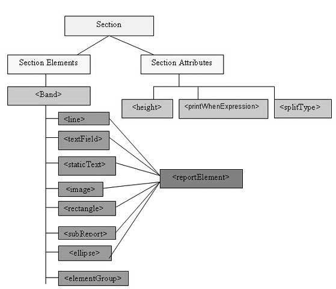
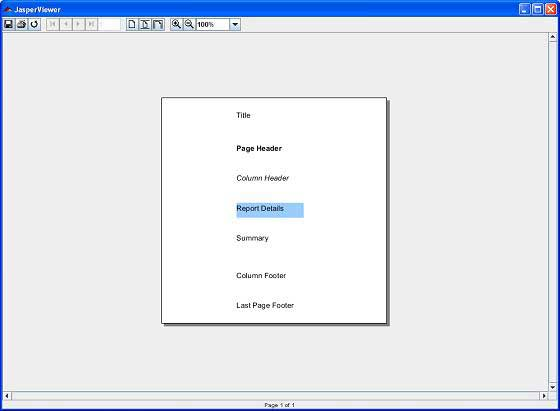

JasperReports - Report Sections
We saw in the chapter Getting Started, the structure of a simple report template. On similar lines JasperReports structures the report template into multiple sections. Sections are portions of the report that have a specified height and can contain report objects like lines, rectangles, images or text fields.
The report engine iterates through the virtual records of the supplied report data source, at report filling time. Depending on each section's defined behavior , the engine then renders each report section when appropriate. For instance, the detail section is rendered for each record in the data source. When page breaks occur, the page header and page footer sections are rendered as needed.
In JasperReports terminology, report sections are also called report bands. Sections are made of one or more bands. These sections are filled repeatedly at report-generating time and prepare the final document.
Main Sections
A report template in JasperReports has the following main sections:
<title></title> <pageheader></pageheader> <columnheader></columnheader> <groupheader></groupheader> <detail></detail> <groupfooter></groupfooter> <columnfooter></columnfooter> <pagefooter></pagefooter> <lastpagefooter></lastpagefooter> <summary></summary> <nodata></nodata<> <background></background>
The following table summarizes each of the sections:
| Section | Description |
|---|---|
| Title | This section appears only once at the beginning of the report. |
| Page Header | This section appears at the beginning of each page in the generated document. |
| Column Header | This section appears at the beginning of each column in the generated document. If the report has only one column defined, then column header and footer sections are ignored. |
| Group Header | This section is introduced by a report group (chapter Groups). Each time the grouping expression changes its value, the group header section is printed above the detail section. In case, if more than one group is defined, the group header is printed in the order of group definition. |
| Detail | This section is repeated for each line of data supplied by the report's data source. The detail section can be made of multiple bands. |
| Group Footer | This section is introduced by a report group (chapter Groups). The group footer section is printed below the detail section before the value of the grouping expression changes. The group footer is always printed for the last line of data in data source. In case, if more than one group is defined, the group footer is printed in the reverse order of group definition. |
| Column Footer | This section appears at the bottom of each column. If the report's column count is 1, then column header and footer sections are ignored. |
| Page Footer | This section appears at the bottom of each page. |
| Last Page Footer | This section replaces the regular page footer on the last page of the report. In case the summary section is also present, then this might not be the very last page of the document. This section is sometimes useful when summary information has to be displayed at the bottom of the last page. |
| Summary | This section appears only once at the end of the report. |
| No Data | This section is printed when the When No Data Print report property is set to No Data Section. If the <noData> section is defined in the report template, and if the data source is empty, then the <noData> section will be the only one taken into account at fill time, and its content will produce the report output. |
| Background | The background section is displayed on every page and cannot overflow to the next page. Elements placed on this section are evaluated at page initialization time and are displayed in the background. All other page objects are displayed on top of the background objects. This section is useful for creating page watermarks. |
Section, Elements and Attribute Relation
The following diagram shows the elements and attributes relationship in a section in a report.
Section Elements
All the above mentioned report sections are optional. But any report template will have at least one such section. Each of these sections contains a single <band> element as its only sub-element. A <band> can contain zero or more following sub-elements:
<line>, <rectangle>, <ellipse>, <image>, <staticText>, <textField>, <subReport>, or <elementGroup>Each of these elements must contain a single <reportElement> as its first element (except elementGroup). A <reportElement> determines how data is laid out for that particular element. Unlike variables and parameters, report elements are not required to have a name, because normally you do not need to obtain any individual element inside a report template.
The table below summarizes the attributes of <reportElement>:
| Attribute | Description | Valid Values |
|---|---|---|
| x | Specifies the x coordinate of the band element. | An integer value indicating the x coordinate of the element in pixels. This attribute is required. |
| y | Specifies the y coordinate of the band element. | An integer value indicating the y coordinate of the element in pixels. This attribute is required. |
| width | Specifies the width of the band element. | An integer value indicating the element width in pixels. This attribute is required. |
| height | Specifies the height of the band element. | An integer value indicating the element height in pixels. This attribute is required. |
| key | Unique identifier of band element. | A unique string value. |
| stretchType | Specifies how the element stretches when the containing band stretches | NoStretch (default): The element will not stretch. RelativeToTallestObject: The element will stretch to accommodate the tallest object in its group. RelativeToBand: The element will stretch to fit the band's height. |
| positionType | Specifies the element's position when the band stretches. | Float: The element will move depending on the size of the surrounding elements. FixRelativeToTop (default): The element will maintain a fixed position relative to the band's top. FixRelativeToBottom: The element will maintain a fixed position relative to the band's bottom. |
| isPrintRepeatedValues | Specifies if repeated values are printed. | true (default): Repeated values will be printed. false: Repeated values will not be printed. |
| mode | Specifies the background mode of the element | Opaque, Transparent |
| isRemoveLineWhenBlank | Specifies if the element should be removed when it is blank and there are no other elements in the same horizontal space. | true, false |
| isPrintInFirstWholeBand | Specifies if the element must be printed in a whole band, that is, a band that is not divided between report pages or columns. | true, false |
| isPrintWhenDetailOverFlows | Specifies if the element will be printed when the band overflows to a new page or column. | true, false |
| printWhenGroupChanges | Specifies that the element will be printed when the specified group changes. | A string value. |
| forecolor | Specifies the foreground color of the element. | Either a hexadecimal RGB value preceded by the # character, or one of the following predefined values: black, blue, cyan, darkGray, gray, green, lightGray, magenta, orange, pink, red, yellow, white. |
| backcolor | Specifies the background color of the element. | Same as Valid Values for forecolor |
Section Attributes
Following are attributes of a report section:
Height
Height of the section specifies the height in pixels for that particular section and is very important in the overall report design.
Print When Expression
A Boolean expression that determines whether the section should be printed or not.
Split Allowed
A flag indicating whether the section is allowed to split when it does not fit on the current page. If true, the section will be transferred to the next page. Note that in case the section does not fit on the next page then the section will be split regardless of the flag's value. splitType can take following values:
splitType="Stretch" : Splits stretched content. If the section stretches on the current page(if the available space is less than declared height), the region that is added to the original height is allowed to split onto the next page
splitType="Prevent" : Prevent split on first attempt. If the section does not fit on the next page, the split occurs normally, as band split prevention is effective only on first split attempt.
splitType="Immediate" : Split immediately. The band is allowed to split anywhere except above its topmost element.
Example
To demostarte each section let's write report template (jasper_report_template.jrxml). Save this file to C:\tools\jasperreports-5.0.1\test directory. In this file we would be displayin a text in each of the sections (we discussed above). The contents of the file are as below:
<?xml version="1.0" encoding="UTF-8"?>
<jasperReport xmlns="http://jasperreports.sourceforge.net/jasperreports"
xmlns:xsi="http://www.w3.org/2001/XMLSchema-instance"
xsi:schemaLocation="http://jasperreports.sourceforge.net/jasperreports
http://jasperreports.sourceforge.net/xsd/jasperreport.xsd"
name="jasper_report_template" pageWidth="300" pageHeight="300" columnWidth="300"
leftMargin="0" rightMargin="0" topMargin="0" bottomMargin="0" >
<title>
<band height="50">
<textField>
<reportElement x="100" y="16"
width="100" height="20"/>
<textElement/>
<textFieldExpression>
<![CDATA["Title"]]>
</textFieldExpression>
</textField>
</band>
</title>
<pageHeader>
<band height="40">
<textField>
<reportElement mode="Opaque" x="100" y="10"
width="90" height="20"/>
<textElement>
<font isBold="true"/>
</textElement>
<textFieldExpression>
<![CDATA["Page Header"]]>
</textFieldExpression>
</textField>
</band>
</pageHeader>
<columnHeader>
<band height="40">
<textField>
<reportElement x="100" y="10" width="90"
height="20"/>
<textElement>
<font isItalic="true"/>
</textElement>
<textFieldExpression>
<![CDATA["Column Header"]]>
</textFieldExpression>
</textField>
</band>
</columnHeader>
<detail>
<band height="40">
<textField>
<reportElement mode="Opaque" x="100" y="10" width="90"
height="20" backcolor="#99CCFF"/>
<textElement/>
<textFieldExpression>
<![CDATA["Report Details"]]>
</textFieldExpression>
</textField>
</band>
</detail>
<columnFooter>
<band height="40">
<textField>
<reportElement x="100" y="10" width="90"
height="20"/>
<textElement/>
<textFieldExpression>
<![CDATA["Column Footer"]]>
</textFieldExpression>
</textField>
</band>
</columnFooter>
<pageFooter>
<band height="40">
<textField>
<reportElement x="100" y="10"
width="90" height="20"/>
<textElement/>
<textFieldExpression>
<![CDATA["Page Footer"]]>
</textFieldExpression>
</textField>
</band>
</pageFooter>
<lastPageFooter>
<band height="40">
<textField>
<reportElement x="100" y="10" width="90"
height="20"/>
<textElement/>
<textFieldExpression>
<![CDATA["Last Page Footer"]]>
</textFieldExpression>
</textField>
</band>
</lastPageFooter>
<summary>
<band height="40">
<textField>
<reportElement x="100" y="10" width="90"
height="20"/>
<textElement/>
<textFieldExpression>
<![CDATA["Summary"]]>
</textFieldExpression>
</textField>
</band>
</summary>
</jasperReport>
The java code to fill and generate the report is as below. Let's save this file JasperReportFill.java to C:\tools\jasperreports-5.0.1\test\src\com\tutorialspoint directory.
package com.tutorialspoint;
import net.sf.jasperreports.engine.JREmptyDataSource;
import net.sf.jasperreports.engine.JRException;
import net.sf.jasperreports.engine.JasperFillManager;
public class JasperReportFill {
public static void main(String[] args) {
String sourceFileName =
"C://tools/jasperreports-5.0.1/test/" +
"jasper_report_template.jasper";
try {
JasperFillManager.fillReportToFile(sourceFileName, null,
new JREmptyDataSource());
} catch (JRException e) {
// TODO Auto-generated catch block
e.printStackTrace();
}
}
}
Here we use an instance of JREmptyDataSource when filling reports to simulate a data source with one record in it, but with all the fields in this single record being null.
Report generation
We will compile and execute the above file using our regular ANT build process. The contents of the file build.xml (saved under directory C:\tools\jasperreports-5.0.1\test) are as below.
The import file - baseBuild.xml is picked from chapter Environment Setup and should be placed in the same directory as the build.xml.
<?xml version="1.0" encoding="UTF-8"?>
<project name="JasperReportTest" default="viewFillReport" basedir=".">
<import file="baseBuild.xml" />
<target name="viewFillReport"
depends="compile,compilereportdesing,run"
description="Launches the report viewer to preview
the report stored in the .JRprint file.">
<java classname="net.sf.jasperreports.view.JasperViewer"
fork="true">
<arg value="-F${file.name}.JRprint" />
<classpath refid="classpath" />
</java>
</target>
<target name="compilereportdesing"
description="Compiles the JXML file and
produces the .jasper file.">
<taskdef name="jrc"
classname="net.sf.jasperreports.ant.JRAntCompileTask">
<classpath refid="classpath" />
</taskdef>
<jrc destdir=".">
<src>
<fileset dir=".">
<include name="*.jrxml" />
</fileset>
</src>
<classpath refid="classpath" />
</jrc>
</target>
</project>
Next, let's open command line window and go to the directory where build.xml is placed. Finally execute the command ant -Dmain-class=com.tutorialspoint.JasperReportFill (viewFullReport is the default target) as follows:
C:\tools\jasperreports-5.0.1\test>ant -Dmain-class=com.tutorialspoint.JasperReportFill
Buildfile: C:\tools\jasperreports-5.0.1\test\build.xml
clean-sample:
[delete] Deleting directory C:\tools\jasperreports-5.0.1\test\classes
[delete] Deleting: C:\tools\jasperreports-5.0.1\test\jasper_report_template.jasper
[delete] Deleting: C:\tools\jasperreports-5.0.1\test\jasper_report_template.jrprint
compile:
[mkdir] Created dir: C:\tools\jasperreports-5.0.1\test\classes
[javac] C:\tools\jasperreports-5.0.1\test\baseBuild.xml:28:
warning: 'includeantruntime' was not set, defau
[javac] Compiling 1 source file to C:\tools\jasperreports-5.0.1\test\classes
compilereportdesing:
[jrc] Compiling 1 report design files.
[jrc] log4j:WARN No appenders could be found for logger
(net.sf.jasperreports.engine.xml.JRXmlDigesterFac
[jrc] log4j:WARN Please initialize the log4j system properly.
[jrc] log4j:WARN See http://logging.apache.org/log4j/1.2/faq.html#noconfig for more info.
[jrc] File : C:\tools\jasperreports-5.0.1\test\jasper_report_template.jrxml ... OK.
run:
[echo] Runnin class : com.tutorialspoint.JasperReportFill
[java] log4j:WARN No appenders could be found for logger
(net.sf.jasperreports.extensions.ExtensionsEnviro
[java] log4j:WARN Please initialize the log4j system properly.
viewFillReport:
[java] log4j:WARN No appenders could be found for logger
(net.sf.jasperreports.extensions.ExtensionsEnviro
[java] log4j:WARN Please initialize the log4j system properly.
BUILD SUCCESSFUL
Total time: 18 minutes 22 seconds
As a result of above compilation, a JasperViewer window opens up as in the screen below:
Here we can see in each of the sections a text is printed. It is to be noted that as JRXML contains a <lastPageFooter> element, it will be displayed in the last page of the report instead of the <pageFooter> element being displayed. The <columnHeader> and <columnFooter> elements will only be displayed on the report if it has more than one column.